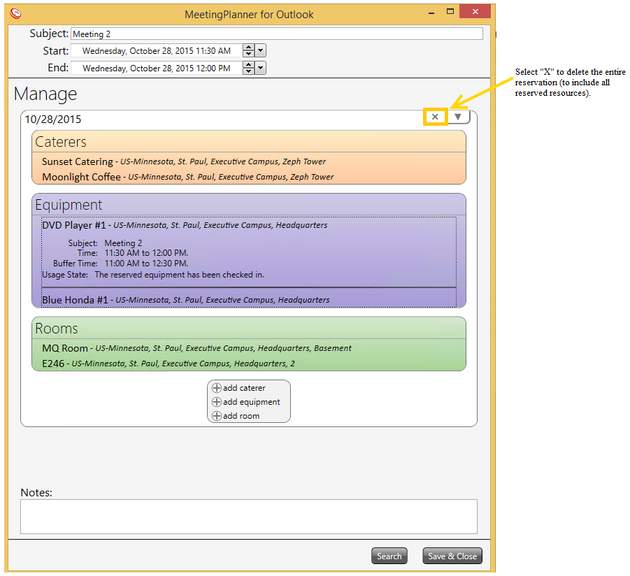
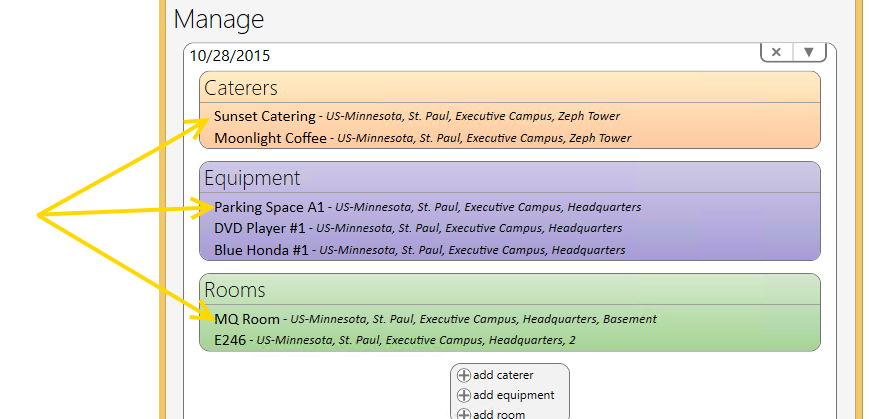
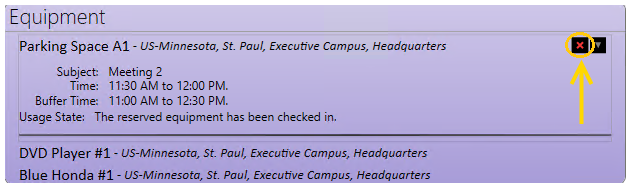
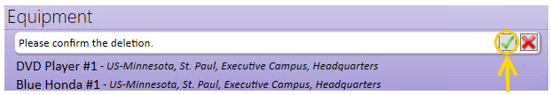

Page summary display
template('MindTouch/Controls/PageOverview');
.columbia-article-topic #mt-toc-container {
display:block !important;
}
#mt-toc-container {
display: block !important;
} 
Important! Although all resources are deleted from the MP6 application, the meeting time and date will remain reserved on the Outlook Calendar. Manually delete the time/date reservation from Outlook.
Note: Meetings deleted in MP6 and the Outlook Calendar are automatically deleted in all MP applications.
Delete Individual Reserved Resources
Delete room, catering, or equipment


Select Delete button to save the resource reservation and return back to the ‘Manage’ window.

Note: Resource reservations that are assigned to a room must be reassigned if the room reservation is released.
Note: Reservations deleted in MP6 are automatically deleted in all MP applications.
Page tags: article:topicMeetingPlanner 6Using MeetingPlanner 6MP 6 Delete MeetingMP 6 Delete Resourcespersona:UserFacilitiesMgr